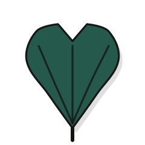
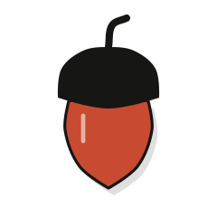
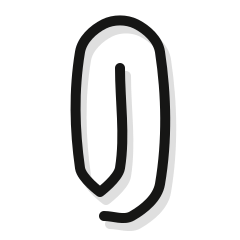
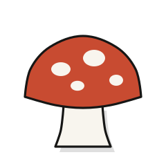
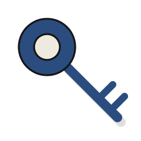
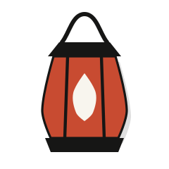
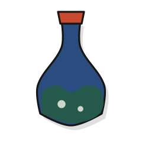
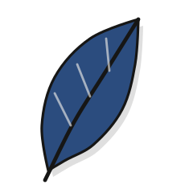

Rig the outline. Pack the sheet.
Drag a Bezier node, slide the tolerance, and watch a traced contour lose most of its points while the silhouette holds. Then paint a sprite, swap its palette and pack the frames into the smallest sheet that fits.
A small open source workbench for vector paths, pixel sprites and texture atlases, with eighteen sample assets. One file of engine code, no dependencies.
Fewer nodes, same silhouette
The editor flattens your curve into a dense trace, runs Ramer-Douglas-Peucker at the tolerance you pick, then refits smooth cubics through the points it kept. Sharp corners stay sharp. Every figure below is recomputed as you drag.
- Trace points
- Points kept
- Trace as polyline
- Simplified path
- Size change
- Worst drift
- Editable nodes
- Path length
- Bounding box
- Peak curvature
A walk cycle on a five tone palette
Sprites store tones, not colours. Pick a palette and the engine ranks its colours by OKLab lightness, so the darkest tone always lands on the darkest colour. Onion skin shows the neighbouring frames in blue and red while you paint.
Traveler walk cycle, frame 1 of 4, 16 by 16
Pack it tight
MaxRects with the Best Short Side Fit rule searches power of two sheets from smallest to largest and keeps the first one that holds every frame. Hatched areas are wasted pixels, and the page checks the result for overlaps before it shows a number.
of the sheet is sprite pixels
- Sheet size
- Frames packed
- Wasted pixels
- Overlap check
Eighteen sample assets
Ten layered vector pieces and eight pixel sprites. They are plain files you can use, and each one opens in its bench. They were authored in code, so treat them as fixtures and starting points rather than finished art.
Vector, layered SVG

Ginkgo leafSVG 
AcornSVG 
PaperclipSVG 
ToadstoolSVG 
Skeleton keySVG Compass roseSVG 
LanternSVG Scallop shellSVG 
Potion flaskSVG 
Quill featherSVG


Pixel, indexed sprites


What is real here
- The engine is one dependency free file. It runs in the browser and under Node, and every number on this page comes from it.
- Simplification is Ramer-Douglas-Peucker on a dense trace of your own curve, followed by a smooth cubic refit. The drift readout is the measured worst distance between the trace and the result.
- Packing uses MaxRects with Best Short Side Fit. Descriptor layouts follow the TexturePacker and Phaser JSON shapes, and the Godot list is our own small schema. They have not been loaded into those tools here.
- Palette swaps rank colours by OKLab lightness, and the quantiser can use OKLab or CIE Lab distance.